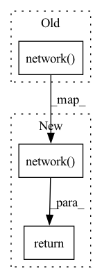

Pattern ID :7381

Before Change
return layers
def forward(self, input):
output = self.network(input)
ouptut = output.view(-1, self.num_discriminator_features*self.x*self.kernel_size*self.kernel_size)
fc = nn.Linear(self.num_discriminator_features*self.x*self.kernel_size*self.kernel_size, 1)
output = fc(output)
After Change
return layers
def forward(self, input):
return self.network(input)
In pattern: SUPERPATTERN
Frequency: 3
Non-data size: 3
Instances
Fragment ID: 24575712
Project Name: radtorch/radtorch
Commit Name: c84d1c77418ec615bcd01ba1bc7f6afd3011440c
Time: 2020-05-12
Author: elbanan@users.noreply.github.com
File Name: radtorch/core/gan.py
M Class Name: DCGAN_Discriminator
N Class Name: DCGAN_Discriminator
M Method Name: forward(2)
N Method Name: forward(2)
M Parent Class: nn.Module
N Parent Class: nn.Module
M File Name: radtorch/core/gan.py
N File Name: radtorch/core/gan.py
M Start Line: 151
M End Line: 154
N Start Line: 148
N End Line: 148
'>
Before Change
self.network = nn.Sequential(*layers)
def forward(self, x):
return self.network(x)
After Change
def forward(self, x):
x = x.permute(0, 2, 1)
o = self.network(x)
o = o.flatten(1, -1)
// o = torch.mean(o, dim=1)
return self.classifier(o)
'>
Fragment ID: 24575711
Project Name: kolaszko/haptic_transformer
Commit Name: 8c96d12327041a7a2e57b6293b37be63416d873c
Time: 2021-05-12
Author: mikolaj.lysakowski.bk@gmail.com
File Name: models/tcn.py
M Class Name: TemporalConvNet
N Class Name: TemporalConvNet
M Method Name: forward(2)
N Method Name: forward(2)
M Parent Class: nn.Module
N Parent Class: nn.Module
M File Name: models/tcn.py
N File Name: models/tcn.py
M Start Line: 72
M End Line: 72
N Start Line: 69
N End Line: 73
'>
Before Change
fc=torch.nn.Linear(self.noise_size, self.num_generator_features*self.num_units*4*4)
output=fc(input)
output=output.view(-1, self.num_generator_features*self.num_units, 4, 4)
ouptut=self.network(output)
return output
class DCGAN_Discriminator(nn.Module):
After Change
return layers
def forward(self, input):
return self.network(output)
class DCGAN_Discriminator(nn.Module):
'>
Fragment ID: 24575709
Project Name: radtorch/radtorch
Commit Name: c84d1c77418ec615bcd01ba1bc7f6afd3011440c
Time: 2020-05-12
Author: elbanan@users.noreply.github.com
File Name: radtorch/core/gan.py
M Class Name: DCGAN_Generator
N Class Name: DCGAN_Generator
M Method Name: forward(2)
N Method Name: forward(2)
M Parent Class: nn.Module
N Parent Class: nn.Module
M File Name: radtorch/core/gan.py
N File Name: radtorch/core/gan.py
M Start Line: 94
M End Line: 98
N Start Line: 94
N End Line: 94